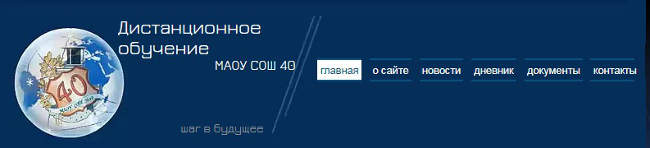
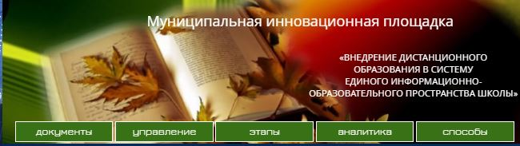
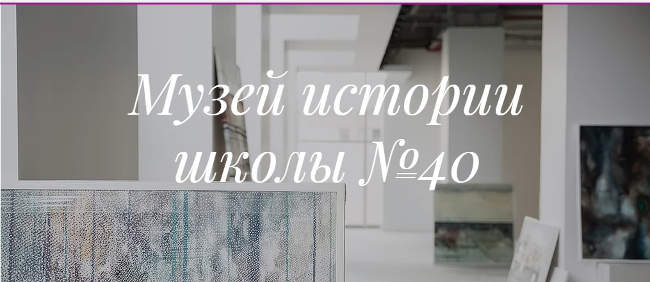
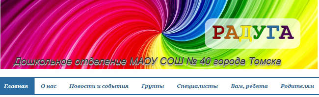

Главная
Добро пожаловать на Официальный сайт Средней общеобразовательной школы №40
г.Томска!
Сайт был создан в 2008 году, на его страницах находит отражение вся многообразная жизнь школы – от
текущих новостей
до хранения определённой информации за последние три года. За прошедшие годы сайт неоднократно
участвовал в
конкурсах сайтов образовательных учреждений и не раз занимал призовые места.
При размещении информации на сайте администрация школы руководствуется Постановлением Правительства
Российской
Федерации от 10 июля 2013 г. N 582 г. Москва "Об утверждении Правил размещения на официальном сайте
образовательной
организации в информационно-телекоммуникационной сети "Интернет" и обновления информации об
образовательной
организации" и Приказом Рособрнадзора от 29.05.2014 N 785 "Об утверждении требований к структуре
официального сайта
образовательной организации в информационно-телекоммуникационной сети "Интернет" и формату представления
на нем
информации" (Зарегистрировано в Минюсте России 04.08.2014 N 33423). Эти два документа определяют
обязательную к
размещению информацию об образовательном учреждении, но кроме обязательной на нашем сайте Вы можете
найти и много
другой информации.
|
Кроме Официального сайта имеются другие сайты, отражающие работу школы по отдельным направлениям. Ниже представлена возможность перейти на эти сайты. |
|
Школьный сайт дистанционного обучения  |
|
Школе 11.07.2017 присвоен статус муниципальной инновационной площадки. Подробнее на школьном сайте дистанционного обучения.  |
|  |
|
Структурное подразделение "Дошкольное отделение"  |